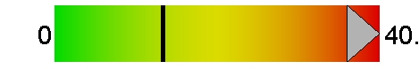
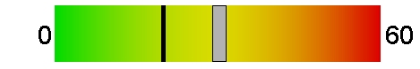
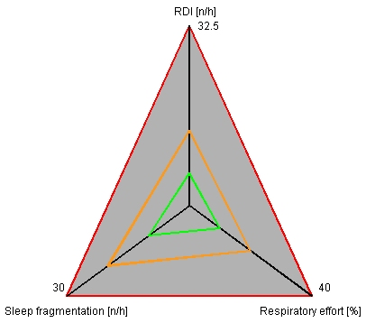
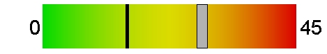

|
|
|
|
|
|
|
|
|
|
|
|
|
|
|
|
Patient |
|
| Name: |
|
Gender: |
|
Weight [kg]: |
|
Birthdate [dd/mm/yy]: |
|
| First name: |
|
BMI: |
|
Height [cm]: |
|
Recording date [dd/mm/yy]: |
24/06/19 |
|
Record |
|
| Recording duration [hh:mm:ss]: |
07:24:51 |
Useful Jawac signal [%]: |
100 |
| Total analysis time [hh:mm:ss]: |
07:24:51 |
Useful SpO2 signal [%]: |
100 |
|
Indicators of Severity (Diagnostic adult) |
|
Estimated respiratory disturbance index (RDI) [n/h]:
Threshold [n/h]: 13.5 |
40.9 |
 |
Estimated respiratory arousal index [n/h]:
Threshold [n/h]: 20 |
30.3 |
 |
Respiratory effort
Threshold [%]: 20 |
04:34:28
(70%) |
_EN_42y_S1_PTEV.jpg) |
|
Jawac analysis |
|
| Total sleep time [hh:mm:ss]: |
06:31:51 |
|
 |
| RDI in supine position [n/h]: |
52.7 |
|
| Mean mandibular lowering [mm] (mm) |
-9 |
|
| Average of mandible oscillations [mm]: |
1.11 |
|
| Total number of events: |
267 |
|
| Number of obstructive events (OE): |
239 |
36.6 /h |
| Number of central events (CE): |
0 |
0 /h |
| Number of mixed events (ME): |
28 |
4.3 /h |
|
Oximetry analysis |
|
Oxygen desaturation index (ODI) [n/h]:
Threshold [n/h]: 15 |
28.3 |
 |
| Cumulative time with SpO2<90%: |
00:38:19 |
Minimum saturation [%]: |
68 |
| Cumulative time with SpO2<80%: |
00:03:50 |
Mean saturation [%]: |
94.1 |
| Cumulative time with SpO2<70%: |
00:00:16 |
Mean pulse rate [bpm]: |
74 |